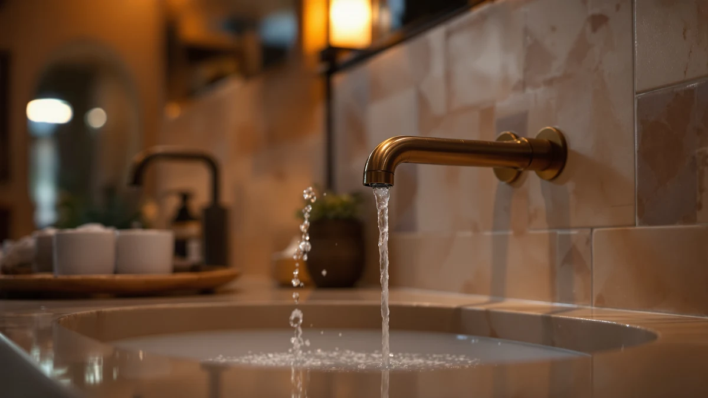

Things to Know Before You Buy
- Old buildup needs time, not force. Mineral deposits that formed over years will not dissolve in the 15-minute soak that works on a newer faucet, so plan on a full hour before you scrub anything.
- An old bathroom faucet's finish is more fragile than it looks. Years of cleaning and daily wear thin the coating, so a pad or powder that was safe on day one can scratch through it now.
- The base and the underside of the spout hide the worst grime. Those spots go untouched for years on most faucets and hold the thickest layer of crusted residue.
- Pitting means cleaning is done helping. Once the metal underneath the finish is exposed, no amount of scrubbing restores it, and replacing the faucet becomes the faster fix.
Figuring out how to clean old bathroom faucets takes longer than wiping down a new one, because years of hard water and soap scum have had time to bond into layers that a quick swipe will not budge.
The fix runs in four stages: a long vinegar soak to loosen what has hardened, a baking soda paste for the crust the soak cannot dissolve on its own, a deep clean of the aerator that has probably not been touched since the faucet was installed, and a final check of the finish once everything is rinsed and dry. Budget about an hour for the whole job. One caution before you start: an aging faucet's finish is thinner than it was the day it left the factory, so skip the scouring pads and anything labeled abrasive, even if the buildup looks stubborn enough to need them.
What You'll Need
- Supplies: white vinegar, baking soda, and dish soap
- Tools: a soft-bristle toothbrush and two microfiber cloths for the faucet's seams and worn finish
Step 1: Soak the buildup before you scrub anything
An old bathroom faucet has had years to collect the white, chalky film hard water leaves behind, and that film hardens into a crust the longer it sits. Soak a few cloths or paper towels in undiluted white vinegar, then wrap them around the spout, the handle bases, and anywhere you see buildup. Press the cloths flat so they stay in contact with the metal, and leave them alone for a full hour, three to four times longer than you would soak a newer faucet.
Check the finish first. Chrome, stainless steel, and brushed nickel tolerate a full hour of vinegar without trouble. Oil-rubbed bronze, matte black, and gold-toned finishes age differently and can discolor under prolonged acid exposure, so for those, cut the soak to 15 minutes and dilute the vinegar with an equal amount of water. When in doubt about what your faucet is actually finished in, test on a small hidden spot first.
Step 2: Scrub the crust loose with a baking soda paste
Vinegar dissolves fresh mineral deposits well, but the layers on an old faucet have often calcified into something closer to a hard shell, and the soak alone will not clear all of it. Mix baking soda with a small amount of water until it forms a paste about as thick as toothpaste, then spread it directly over the spots that are still rough or chalky after the vinegar wrap.
Work the paste in with a soft-bristle toothbrush using small circles, not pressure. The mild abrasion in baking soda lifts calcified mineral deposits but stays gentle enough to leave an aged finish intact, which matters more here than it does on a faucet that is only a year or two old. Rinse the paste away with a damp cloth and check your progress before deciding whether a spot needs a second round.
Step 3: Clean the base, handles, and hidden seams
The parts of an old bathroom faucet that look clean from standing height are rarely the parts that are actually dirty. Grime settles at the base plate, in the seam where the handles meet the deck, and on the underside of the spout where it curves back toward the wall. None of these spots get touched by a casual wipe, which is why they carry the thickest buildup on a fixture that has gone years between deep cleans.
Dip the toothbrush in soapy water and work it into each seam, applying light pressure, since corroded screws and worn-out gaskets underneath an aging faucet can loosen or shift if you push too hard on the handles. If a handle feels wobbly while you clean around it, note that for later. A loose handle on an old faucet is often the first sign the internal hardware is wearing out, a separate problem from anything a cleaning can fix.
Step 4: Soak and clear the clogged aerator
The aerator, the small screened cap at the tip of the spout, usually has not been removed since the faucet went in, and on an old fixture it holds more sediment than any other part. Unscrew it counterclockwise by hand. If years of corrosion have fused it in place, wrap it in a rag and turn it with pliers, using light pressure so the jaws do not chew into the metal.
Drop the aerator and its internal parts into a cup of white vinegar and soak for 30 minutes, twice as long as you would for a newer faucet, since the sediment has had years to compact into the mesh. Scrub the screen with the toothbrush, rinse under running water, and thread it back on hand-tight. Turn the water on and check the stream: a faucet that has sputtered or pulled to one side for months usually runs clean and even again once the aerator is clear.
Step 5: Rinse, dry, and check whether the faucet is worth saving
Wipe the entire faucet with a cloth dampened in clean water to clear away leftover vinegar and baking soda. Dry it with a second cloth, working into every seam, because any film left to air-dry turns back into the same mineral spots you spent the last hour removing.
With the faucet dry, look closely at the finish under good light. Discoloration and dullness usually clean up with the steps above, but pitting, flaking plating, or a greenish patina where metal meets metal mean the coating has worn through, and no cleaner brings that back. If that is what you are looking at, cleaning old bathroom faucets like yours has reached its limit, and a straightforward swap, like the Pfister Willa in the picks below, costs less than most people expect and solves the problem for years.
Common Mistakes to Avoid
The most expensive mistake is reaching for an abrasive pad or steel wool on an old bathroom faucet. A worn finish is already thinner than it was when the faucet was new, and a few seconds of scouring removes what decades of normal wear left intact, with no way to put it back. Bleach and ammonia-based sprays cause the same kind of damage more slowly, etching chrome and stripping the coating off bronze and black finishes over repeated use.
Skipping the soak ranks close behind. Scrubbing hardened mineral deposits before they have had an hour to loosen grinds grit against the finish, which scratches the metal instead of cleaning it. The soak does the work, and the brush only finishes it.
Forcing stuck parts causes a third common mistake. A corroded aerator or a handle that has not moved in years can seize up, and cranking on it with pliers or a wrench usually cracks the housing or strips the threads rather than freeing anything. Work a rag-wrapped grip with steady, light pressure instead, and if it still will not budge after a vinegar soak, that resistance is a sign the part needs replacing, not more force.
Finally, walking away before the faucet is dry undoes the whole job. Leftover moisture evaporates into the same spots you spent the last hour clearing, so dry every seam by hand instead of letting it air out.
Our Top Picks
Cleaning brings back the shine on most old bathroom faucets, but it cannot fix pitting, flaking plating, or a handle that has corroded from the inside. If yours has crossed that line, these three picks install in under an hour and resist the buildup that caused the problem in the first place.

Editor’s Pick
Pfister Willa Bathroom Sink Faucet
Pfister backs the Willa with a lifetime finish warranty, which matters most if the faucet you are replacing failed well before you expected it to.
$113.00
Check Price on Amazon
Best Value
Ryuwanku Brushed Gold Pull Down
At under $40, the Ryuwanku pull-down costs less than most plumbers charge for a service call and drops onto the same mounting holes your old faucet used.
$39.99
Check Price on Amazon
Premium Choice
GBBNE Brushed Gold Bathroom Faucet
The brushed gold finish on the GBBNE resists the fingerprints and water spots that likely made your old faucet look dull between cleanings.
$49.99
Check Price on AmazonFrequently Asked Questions
What is the best way to clean an old bathroom faucet without damaging the finish?
How do you remove years of hard water buildup from an old faucet?
Can you restore a tarnished old bathroom faucet, or is it too far gone?
How often should you clean an old bathroom faucet?
When should you stop cleaning an old bathroom faucet and replace it instead?
Verdict
Learning how to clean old bathroom faucets comes down to patience more than product: a full hour of vinegar to loosen what years of hard water hardened, a baking soda paste for the crust that soak alone cannot dissolve, and a dedicated pass on the aerator, base, and seams that a casual wipe always misses. Skip the abrasive pads and harsh sprays, since an aging finish is thinner than it used to be and shows damage immediately. Dry the faucet completely when you finish, because the water spots you removed will reappear overnight if you let it air dry. Repeat the soap wipe weekly and the vinegar treatment monthly if your water is hard, and most faucets keep looking presentable for years longer than expected. If yours already shows pitting or flaking plating under good light, no cleaning routine reverses that, and the Pfister Willa from the picks above is a reasonable, affordable place to start over, especially if you also want a finish built to resist the hard water that caused the problem in the first place.